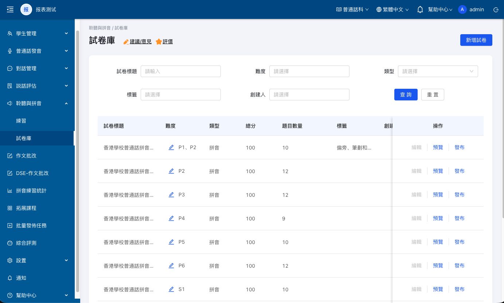
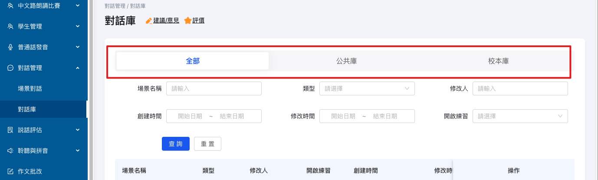
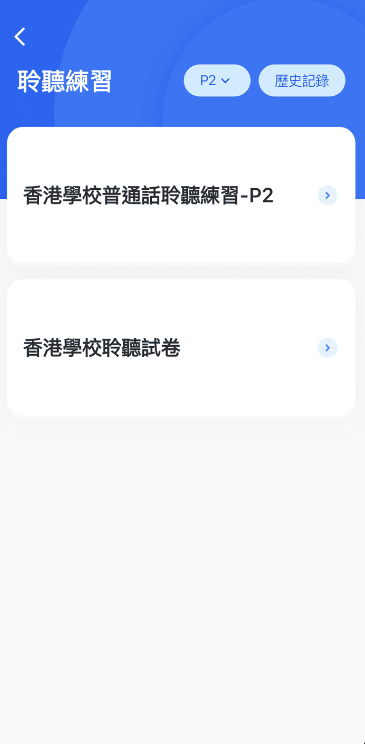
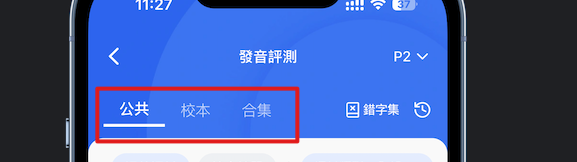

V1.1 · 2026-10-12
教師可在試卷庫切換「全部／公共庫／校本庫」，並在選中的範圍內查詢試卷。學生可在 App 聆聽練習頁切換「公共／校本／合集」。




後台左側「試卷庫」菜單名稱右侧使用統一「需求」徽標，僅提示需求位置，不改變導航或驗收狀態。
原型內置 10 份試卷，其中公共庫 7 份、校本庫 3 份。無篩選時，「全部」顯示 10 條，「公共庫」顯示 7 條，「校本庫」顯示 3 條。選擇類型「聆聽」並查詢後，全部顯示 2 條、公共庫為空、校本庫顯示 2 條。
| 編號／事項 | 需求與驗收 | 狀態 |
|---|---|---|
| 01／預設頁面 | 進入試卷庫，三個 Tab 位於篩選區上方，全部選中。 | 待驗收 |
| 02／分類切換 | 依次選擇公共庫、校本庫、全部，列表及條數與分類一致。 | 待驗收 |
| 03／查詢與重置 | 查詢限定在當前庫；切換保留查詢；重置後仍在當前庫。 | 待驗收 |
| 04／空列表 | 輸入不存在的標題並查詢，顯示空狀態；重置可恢復。 | 待驗收 |
| 05／鍵盤操作 | Tab 聚焦後，可用左右方向鍵切換分類；焦點及選中狀態清晰。 | 待驗收 |
| 06／App 入口與分類 | 點擊學生端（App手機端），顯示手機聆聽練習頁；公共預設選中，切換校本和合集後卡片及底線更新。 | 待驗收 |
| 07／年級與合集 | 切換年級保留分類；進入合集可查看練習卡片，返回回到合集列表。 | 待驗收 |
| 08／端口隔離 | 後台與 App 的 Tab 各自運作，導航往返保留各自選中狀態。 | 待驗收 |